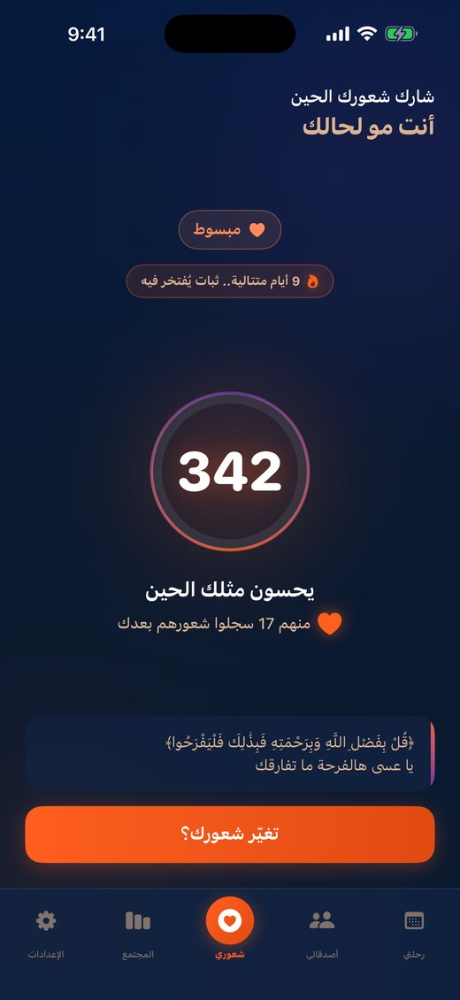
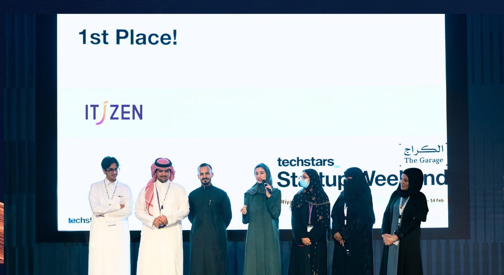
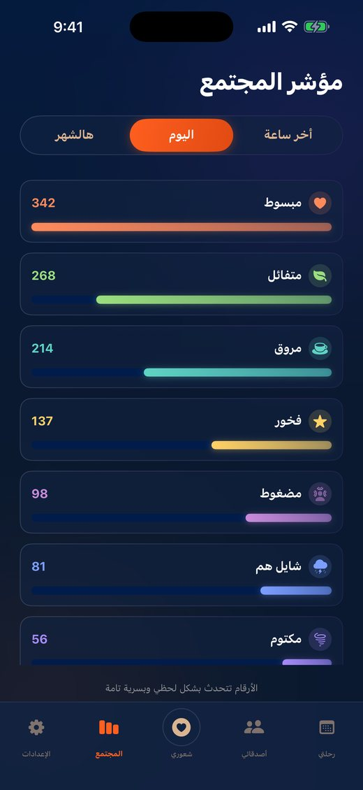
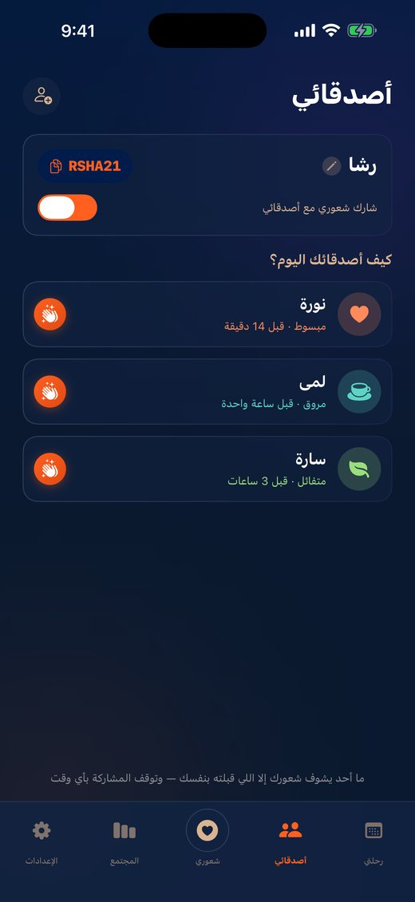
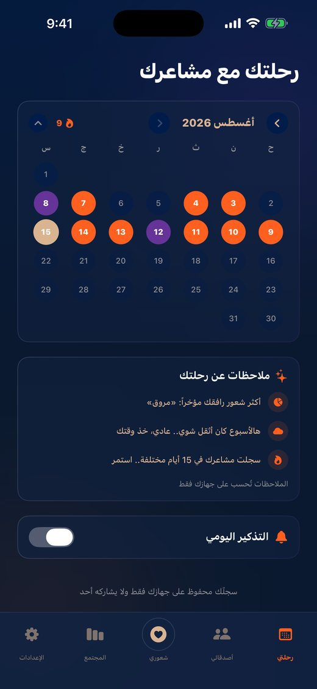
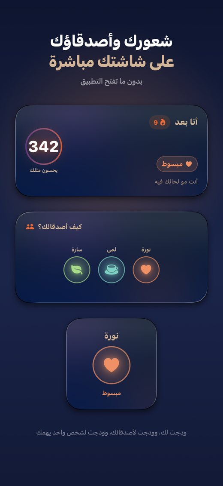

من الشباب السعودي (١٥–٣٠) واجهوا اضطراباً نفسياً خلال حياتهم
صُنع في السعودية · انطلقت ٢٠٢٥
ذكاء اصطناعي في خدمة الصحة النفسية
إتزن مبادرة شبابية سعودية، نسخّر الذكاء الاصطناعي لعافيتنا النفسية — أدوات غير اعتيادية، بس مفيدة، وتوصلك لين عندك وبلهجتك. منكم ولكم.
- ذكاء اصطناعي أخلاقي
- عربي أولاً
- تحليلات سلوكية
- بحث حائز على جوائز عالمية

لماذا نحن هنا
الصحة النفسية في العالم العربي
من المحتاجين لرعاية نفسية في السعودية ما وصلتهم
يفضّلون يتعاملون معها بأنفسهم
المصدر: المسح الوطني السعودي للصحة النفسية
الناس يعانون في صمت. نحن نبني الأدوات التي تجعل فهم الحالة النفسية أمراً عادياً، وميسّراً، وبلغتنا.
منهجنا
من إشارات معقّدة إلى رؤى واضحة
-
٠١
نلتقط الإشارة
مشاعر، وسلوك، ولغة، وأنماط يومية — بطرق طبيعية لا تشبه الاستبيانات.
-
٠٢
نحلّلها بمسؤولية
نماذج ذكاء اصطناعي وتحليلات سلوكية مبنية على أدوات قياس نفسية معتمدة، لا على التخمين.
-
٠٣
نحوّلها إلى فهم
رؤى واضحة تفهمها وتتصرّف بناءً عليها — أدوات يومية خفيفة، بدون وصمة وبدون تعقيد.
للأفراد
أدوات يومية خفيفة تساعدك على ملاحظة حالتك النفسية وفهمها — دون وصمة، ودون تعقيد.
للمؤسسات
مؤشرات صحة نفسية مجمّعة ومجهولة الهوية للجامعات والمدارس وبرامج الموظفين — تقيس الأثر بدل أن تفترضه.
مشاريعنا
ما بنيناه، وما نستكشفه
متاح الآن
أنا بعد Ana Baad
كم مرة حسّيت بشي وما لقيت أحد يفهمك؟ «أنا بعد» يقولك: أنت مو لحالك. سجّل شعورك في ثانيتين — بدون حساب، بدون اسم، بدون رقم جوال — وشوف كم شخص يحس مثلك في نفس اللحظة.
- مشاعر بلغتنا: مروق، شايل هم، مكتوم، مبسوط…
- رقم يطمّن: كم شخص يحس مثلك اليوم
- آيات وأبيات تواسيك حسب لحظتك
- أصدقاء برضاك، ولمسات تصلهم كإشعار
- رحلتك: تقويم ملوّن وأنماط تُحسب على جهازك
قيد البحث والتطوير
اليوميات الصوتية
فضفض لدقائق، والذكاء الاصطناعي يقرأ نبرة صوتك وكلامك وأنماطك مع الوقت، ويعطيك مؤشراً لعافيتك النفسية — مشروعنا القادم.
لم نبنِ هذا المشروع بعد. نحن في مرحلة قياس الحاجة الحقيقية له قبل كتابة أول سطر — إن كان هذا شيئاً تستخدمه فعلاً، فأخبرنا.
مشروعنا القادم
كيف يمكن لصوتك أن يقرأ حالتك
قاعدين نبنيه على مهل وبالبحث — سجّل اهتمامك، وأول المسجّلين أول من يجرّب.
0
خفيف
مؤشر مركّب — مثال توضيحي
- منخفض ٠–٢٥
- خفيف ٢٦–٤٠
- متوسط ٤١–٦٠
- مرتفع ٦١–١٠٠
الصوت تحليل الصوت
النبرة، وطبقة الصوت، والسرعة، والأنماط الصوتية.
المحتوى تحليل المحتوى
معالجة لغوية عربية لفهم مشاعر ما تقوله.
السلوك تحليل السلوك
أنماط تُرصد عبر الوقت لا تظهر في جلسة واحدة.
ودّك تكون أول من يجرّب اليوميات الصوتية؟ التسجيل مجاني.
سجّل اهتمامكأصلنا البحثي
بدأت القصة ببحث، لا بفكرة تطبيق
بدأت إتزن من بحث حوّل مقياس تايلور للقلق الصريح إلى لعبة فيديو تقيس القلق أثناء اللعب — بدل أن تسأل عنه في استبيان. حصد البحث المركز الثالث عالمياً في العلوم السلوكية والاجتماعية في Regeneron ISEF بين أكثر من ٨٠ دولة، وجائزة الجمعية الأمريكية لعلم النفس (APA)، وتغطية في مجلة Smithsonian.
تلك الفكرة — أن القياس النفسي يمكن أن يكون طبيعياً وغير مخيف — هي نفسها التي نبني عليها كل مشروع في إتزن اليوم.
- المركز الثالث عالمياً Regeneron ISEF — العلوم السلوكية والاجتماعية، ٨٠+ دولة
- جائزة APA الجمعية الأمريكية لعلم النفس — عن لعبة قياس القلق
- المركز الأول Startup Weekend الرياض — الكراج × Techstars

مبادئنا
ثلاثة التزامات لا نساوم عليها
ذكاء اصطناعي أخلاقي
الخصوصية بالتصميم، وحدود واضحة لما نجمعه ولماذا. لا نبيع البيانات، ولا ندّعي تشخيصاً طبياً.
إتاحة للجميع
بالعربية أولاً وبلهجتنا، مجاناً في جوهره، ومصمّم لمن لن يذهب إلى عيادة أبداً.
أثر حقيقي
نقيس ما نبنيه بالاستخدام الفعلي لا بالعروض التقديمية — ونختبر الطلب قبل أن نبني، لا بعده.
جولة داخل أنا بعد
أنت مو لحالك — بالصور




- بدون حساب ولا اسم ولا بريد
- بدون إعلانات وبدون تتبّع
- سجلك التفصيلي على جهازك فقط
- احذف كل بياناتك بضغطة
لنجعل الصحة النفسية في متناول الجميع
سجّل اهتمامك باليوميات الصوتية، أو اكتب لنا اللي في بالك — نقرأ كل رسالة ونرد عليها.